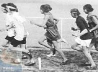

پذيرش > سایت نوشته ها > روژ لب؛ شاخصی برای موج سوم فمینیسم
 موج سوم فمینیسم در آلمان موج سوم فمینیسم در آلمان

 روژ لب؛ شاخصی برای موج سوم فمینیسم روژ لب؛ شاخصی برای موج سوم فمینیسم
16 اسفند 1387 - دویچه وله - نسخه قابل چاپ
«از هر چه بگذریم، تو همسر و مادری!» این جملهای است که همسر "نورا"، قهرمان اصلی نمایشنامهی "خانهی عروسکی" نمایشنامهنویس شهیر نروژی، هنریک ایبسن، بارها در طول نمایش بر زبان میآورد. "نورا" در این اثر حاضر نیست، چارچوبهای تنگ قراردادهای اجتماعی و خانوادگیای که در مورد زنان اعمال میشد، را بپذیرد. پاسخ او به همسرش، بعدها به استدلالی بدل شد که اغلب زنان کشورهای اسکاندیناوی، هنگام بحث با غیرهمجنسان خود در جهت کسب حقوق برابر با مردان از آن سود میجستند: «از هر چه بگذریم من یک انسانم، مثل تو. یا حداقل میخواهم انسان بشوم.»
خودداری از بحث
این استدلال و بحثهای در پیآن، تنها در رسانههای آن زمان کشورهای اسکاندیناوی مطرح نشدند، بلکه نقل اصلی اغلب مجالس و میهمانیهای قشر روشنفکر این جوامع بودند. بحث دربارهی نورا و شیوهی نوین زندگی او، تا جاییگسترده شده بود که برخی از میزبانان در کارت دعوت خود با تأکید قید میکردند: «لطفاً از بحث در بارهی نمایشنامهی "خانهی عروسکی" خودداری فرمائید.»
زنان پیشروی جنبش تساویطلبانهی اروپا که سالها پس از نگارش این نمایشنامه در سال۱۸۷۹، شکل گرفت، از تکرار این استدلال نه تنها "خودداری نفرمودند"، بلکه آن را به شعار اصلی نهضت خود نیز تبدیل کردند.
سرنوشت دگرگون شدهی "نورا" در آلمان
ندای آزادیخواهانهی "نورا" به آلمان، دیرتر از سایر کشورهای اروپایی رسید. شاید به همین دلیل و نیز به دلیل "استواری تزلزلناپذیر ساختارهای سنتی" جامعهی آلمان، سرنوشت "نورا" هنگامیکه این نمایشنامه برای اولین بار در این کشور به ا جرا در آمد، دگرگون شد: ایبسن ناچاراً به خواست مدیران تئاتر و برای حفظ "ارج و قرب خانواده"، پایان نمایشنامه را تغییر داد. یعنی "نورا"یی که در اجرای کپنهاگ در سال ۱۸۷۹، برای کسب آزادی و اثبات انسانبودن خود، "آغوش گرم خانواده" را ترک میکند، در اجرای سال ۱۸۸۰ در هامبورگ، بهخاطر بچهها و داشتن حس مادری در زندان خانوادهی خود باقی میماند. البته بعدها، در تماشاخانهای در شهر مونیخ، نمایشنامهی "خانهی عروسکی" دوباره با پایان اصلی خود، به اجرا در آمد.
"مرگ فمینیسم"
استدلال همسر نورا، ولی در جامعهی آلمان همچنان کارآیی دارد: «از هر چه بگذریم، تو همسر و مادری!» این دیدگاه در ابتدای قرن بیست و یکم، چنان گسترش یافت که پیدایی موج سوم جنبش زنان این کشور را سبب شد. این موج که از سال ۲۰۰۴ پا گرفت، واکنشی به کارزاری بود که محافظهکاران و رسانههای هوادار آنان بهراه انداختند و در مقالات گوناگون خود "مرگ فمینیسم" را اعلام کردند. اینان درنوشتههای خود، زنان را به "بازگشت به آشپزخانه" و انجام وظایف "بزرگ کردن اطفال" و "رتق و فتق امور خانواده" فرا میخواندند. دستاوردهای فمینیسم از دیدگاه آنان چیزی جز "انقراض تدریجی نسل آلمانی و رو به پیری رفتن جامعهی آلمان نبود". زیرا زنان بهجای نشستن در خانه و مراقبت از بچهها، به شغل و مقام و جایگاه اجتماعی خود فکر میکنند.
"اصل کشتی نوح"
در این کارزار، کتاب جنجالآفرین نویسندهی محافظهکار، اوا هرمن، به نام "اصل کشتی نوح"،
نقش تعیینکنندهای داشت. این چهرهی محبوب تلویزیونی که در شبکهی دولتی "NDR"،
گویندهی اخبار بود، به دلیل افراط در دفاع از "کانون گرم خانواده" از کار اخراج شد، زیرا از "مقام پر ارج مادری در دورهی نازی" تمجید کرده بود. او در مصاحبهای گفته بود: «در آن زمان، زنها و مادران جایگاه ویژهیی پیدا کرده بودند. زیرا در ایجاد نژاد آریایی نقش مهمی بر عهده داشتند. احترام به زنان در دوران نازیها، واقعیت غیرقابل انکاری است.»
پورنو علیه فمینیسم
کتاب دیگری که در کارزار علیه فمینیسم، تعیینکننده بود و هنوز هم در این زمینه نقش مهمی بازی میکند، عنوان "نواحی مرطوب" را یدک میکشد. این کتاب بنا به ارزیابی برخی از رسانههای معتبر آلمان، در حال حاضر نیز در جدول کتابهای پرفروش این کشور، در ردیف دوم قرار دارد. نویسندهی این کتاب، شارلوت روشه، در قالب داستانی پورنوگونه، پدیدهی طلاق، آسیبهای اجتماعی و پیآمدهای ناگوار آن بر فرزندان طلاق، را به باد انتقاد میگیرد و تفکرات فمینیستی را عامل اصلی آن میداند. تصاویر "سکسی غیرمتعارف" در این رمان چنان "بیپروا تصویر شده" که خود نویسنده، خواندن آن را تنها به علاقمندان بالای ۲۱ سال توصیه میکند.
فمینیسم و فشار دوگانه، سهگانه...
در این برهه، برخی از "فمینیستهای سابق" نیز با گروههای محافظهکار و واپسگرای ضد فمینیسم همآوا شدند و شکست فمینیسم را اعلام کردند. اینان با طرح این نکته که زنان موج دوم جنبش آزادیخواهانهی آلمان "به تنهایی" و بدون همراهی با مردان به استقلال رسیدهاند، میپرسند: «چه سودی از فمینیسم بردیم؟»
این فمینیستها اذعان دارند که اغلب همفکران آنان از عهدهی همه کاری بر میآیند: مدیریت، بچهداری، تعمیر خودرو، برپا کردن مراسم فرهنگی ـ سیاسی، ایجاد شبکههای بینالمللی ... آنها همیشه سرحال و شیک بهنظر میرسند و برخی حتی داوطلبانه به فعالیتهای سیاسی خارج از محدودهی کاری خود نیز میپردازند و دائم در حال تلاش برای ساختن زندگی بهترند. زندگی بهتر؟ آیا این "زندگی بهتر"، فشار دوگانه، سهگانه، چهارگانه و در نتیجه درهم شکستن نهایی نیست؟
نمایندگان موج نوی فمینیسم در آلمان
سه زن جوان روزنامهنگار آلمانی، به این پرسش پاسخ منفی میدهند و در کتابی با عنوان "ما دختران آلفا" توضیح میدهند که: «چرا فمینیسم زندگی را زیباتر میکند.» این موضع، در زیر تیتر کتاب هم آمده است.
این نمایندگان موج نوی فمینیسم در آلمان، هر سه در سالهای بین ۱۹۷۲ تا ۱۹۸۳ بهدنیا آمدهاند: مردیت هاف (Meredith Haaf)، سوزانه کلینگنر (Susanne Klingner) و باربارا اشترایدل (Barbara Streidl). اینان سیمون دوبووآر را خواندهاند و جزو مشترکان مجلهی "اما" بودهاند؛ مجلهای که ناشر آن، آلیس شوارتسر، یکی از پیشگامان موج دوم فمینیسم آلمانی (موسوم به فمینیسم رادیکال) است.
"دختران آلفا"، ولی برخلاف هواداران فمینیسم رادیکال، به مد و آرایش اهمیت میدهند، ولی نه تا آنجا که مدلهای زیبایی این و آن مجلهی مد را سرمشق خود قرار دهند و به عروسک تبدیل شوند. از شعار "بکشید و خوشگلم کنید" بیزارند و میخواهند به دنیا نشان دهند که جهان، تنها در تساوی بین زن و مرد، زیباست! ولی این شعار را با نظریههای پرطمطراق تزئین نمیکنند و نمیخواهند برای "فمینیسم خود، مبانی و اصول غیرقابل عدول" تعیین کنند. آنها در کتاب "ما دختران آلفا" برداشت خود را از فمینیسم و چگونگی پیاده کردن آن درجامعهی آلمان، به زبانی ساده مطرح کردهاند.
گسترههای اصلی مبارزه
چند تن از وزیران و سیاستمداران زن آلمانی در تظاهراتی با عنوان "خشونت علیه زنان"
این نمایندگان موج نوی فمینیسم در آلمان، گسترههای اصلی مبارزهی خود را اینگونه مشخص میکنند: «مبارزه برای کسب حقوق و دستمزد مساوی، ایجاد امکانات دولتی برای مراقبت از کودکان و تربیت آنان، مبارزه علیه زنستیزی همگانی و تصاویر کلیشهای در بارهی جایگاه اجتماعی زن.»
"دختران آلفا" در سخنرانیها و مراسمی که برای تبلیغ دربارهی دیدگاههای خود برگزار میکنند، ابتدا دستاوردهای موج دوم جنبش زنان در دهههای ۱۹۷۰، ۱۹۸۰ و اوایل ۱۹۹۰ را برمیشمرند: این که زنان امروزه میتوانند به اغلب خواستها و نیازهای خود جامعهی عمل بپوشانند، آزادانه به سفر بروند، شغل دلخواه خود را انتخاب کنند، دوست پسر یا شوهر ایدهآلشان را برگزینند و آن هنگام صاحب بچه شوند که خود تعیین میکنند. سقط جنین، تحت شرایط خاصی قانوناً مجاز است. زنان نباید دیگر به آزارهای جنسی در جامعه، از جمله درمحل کار خود، تن دهند. تمکین برایشان معنا ندارد. تجاوز، جرم محسوب میشود، حتی در زندگی زناشویی. اینکه دختران و پسران از مکانات آموزشی مساوی بهرهمند شوند، کاملاً بدیهی است....
دستاوردهای ناکافی
به باور این نمایندگان موج نوی فمینیسم، این دستاوردها ولی کافی نیستند. به نظر آنان، تساوی بین زن و مرد هنگامی صورت میگیرد که همهی این موارد بدیهی و واضح باشد: وقتی که طرح سهمیهبندی برای زنان ضروری نباشد، وقتی زنان به اندازهی مردان حقوق و دستمزد دریافت کنند، وقتی تبعیضی در زمینههای شغلی و حرفهای وجود نداشته باشد. وقتی دیگر لازم نباشد دربارهی موضوعهای زیر در روزنامهها مقاله نوشت: «زنان در حرفههای مردانه»، «زنان موفق و قوی»، «صدراعظم آلمان، زن است»، «یک زن به مقام پروفسوری رسید.»... "دختران آلفا" میگویند، اینها امتیاز نیستند. اینها بیعدالتیهای آشکارند.
مبارزه با بیعدالتی، همراه بامردان
این سه روزنامهنگار فعال برای ازبینبردن این نابرابریها، راههایی متفاوت از نمایندگان موج دوم جنبش فمینیستی آلمان پیشنهاد میکنند. "دختران آلفا" پیش از هرچیز مایلند در این مبارزه از نفوذ و نیروی مردان به عنوان "همراهان طبیعی" خود، بهرهمند شوند. تنها در صورتی زنان نباید بین بچه و شغل یا مادر بودن و جایگاه اجتماعی، یکی را انتخاب کنند که مردان هم "مستقل" شوند.
طرفداران فمینیسم موج دوم در آلمان، مردان را از حوزهی فعالیت و زندگی خود طرد میکردند. آنان با این استدلال که "انرژی محدود خود را باید صرف آگاهشدن و آگاهکردن خویش و زنان دیگر بکنند و نه صرف مردان"، دست به ایجاد انتشاراتیها، روزنامهها، کتاب فروشیها، کافهها و آبجو فروشیهای زنانه و ... زدند و نیز اتحادیهها، جمعیتها و گروههای زنان را تشکیل دادند. مردان اجازهی ورود به هیچیک از مراسمی که از سوی این گروه از فمینیستها برپا میشد، نداشتند. اینان استدلال میکردند که زنان برای پیبردن به هویت و تواناییهای خود به "مکانهای امن" نیاز دارند. آنان میخواستند، از آنجا که حضور مردان در جمع، بر رفتار و برخوردهای زنان تأثیر میگذارد، فارغ از این "فشارها و محضورات"، به خودیابی و تعریف نیازهای خویش برسند. برخی حتی دامنهی این طرد را به اطاق خواب زنان هم گسترش دادند و تمایل به همجنس را نوعی پلاتفرم سیاسی اعلام کردند.
"دختران آلفا" برعکس میخواهند، به فمینیسم چهرهای کاملاً "زنانه" ببخشند: با روژلب و لباسهای شیک و توجه به سکس. اینان به اینترتیب میخواهند وجههی فمینیسم در آلمان را که بهنظرشان خشک، زیاده از حد جدی، مردستیز و دشمن لذات جنسی است، تغییر دهند.
"نورا" اگر زنده بود، قطعاً به این نهضت میپیوست!
فهیمه فرسایی
ارسال به
بالاترین
،
توییتر
،
فریندفید
،
فیسبوک
در همين بخش :
 یک خبر تلخ؟ یک قانونشکنی؟ یک تصمیم بخشنامهای جدید؟ یک خبر تلخ؟ یک قانونشکنی؟ یک تصمیم بخشنامهای جدید؟
چرا بایست به سکسوالیته پرداخت؟ / نفیسه آزاد
آزارجنسی خانگی؛ «قربانی» نه، «نجات یافته»
زنان، بزرگترین بازندگان بهار عرب
سانسور از دیدگاه جنسیتی/الهه امانی
ديگر بخش ها :
طرح یک میلیون امضا
|
مقالات
|
سایت نوشته ها
|
اخبار
|
گزارش كمپين
|
گفت و گو
|
علیه سکوت
|
كوچه به كوچه
|
نامه های شما
|
گزارش ویژه
|
گفتگو با اعضا
|
ویژه سالگرد کمپین
|
تصویر برابری
|
دل آرام علی
|
تریبون
|
مقالات
|
تاریخ شفاهی
|
خارج از چارچوب
|
کتابخانه
|
درباره کمپین
|
کمپین در شهرها
|
کمپین در بند
|
صدای تغییر
|
ویژه 22 خرداد
|
لایحه حمایت از خانواده
|
گالری
|
عشا مومنی
|
امیر یعقوبعلی
|
خدیجه مقدم
|
راحله عسگری زاده و نسیم خسروی
|
پروین اردلان،جلوه جواهری، مریم حسین خواه، ناهید کشاورز
|
زینب پیغمبرزاده
|
سعیده امین، سارا ایمانیان، محبوبه حسین زاده، ناهید کشاورز و همایون نامی
|
احترام شادفر
|
نسیم سرابندی زاده،فاطمه دهدشتی
|
وبلاگ مهمان
|
پرونده خرم آباد
|
دستگیری ها
|
مریم مالک
|
پرستو اللهیاری
|
مهرنوش اعتمادی
|
سمیه رشیدی
|
Other Languages
|
همراهان
|
«فراخوان کمپین ده روز با بهاره هدایت»
| English
|